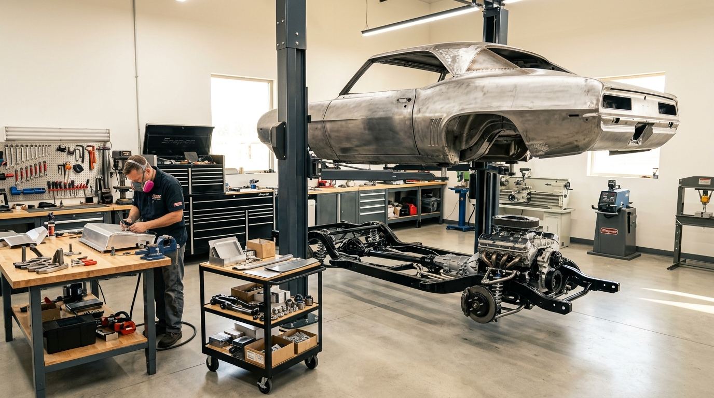

Como Funciona o Processo Completo de Restauração Automotiva: Guia Passo a Passo
Entenda a engenharia de restauração de carros antigos: desde a desmontagem catalogada e decapagem química até a pintura em estufa e alinhamento de gabarito.
Ler Artigo Completo ➔